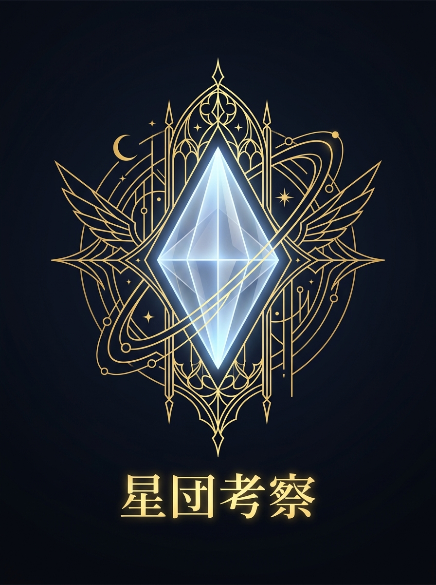

Five Star Stories Archive
FSS星団考察アーカイブ
騎士、GTM、ファティマ、国家史、年表。ブログで深く読み、SNSで考察の入口を届けています。
Latest Focus
FSS考察：名バイプレイヤーと劇中劇説を追う
『ファイブスター物語』の脇役たち、なぜか「また見たことがある顔」に見えることはないでしょうか。 この記事では、その違和感を手がかりに、FSS／ファイブスター物語は神が読者に向けて演…
おすすめショップ（PR）

Five Star Stories Archive
騎士、GTM、ファティマ、国家史、年表。ブログで深く読み、SNSで考察の入口を届けています。
Latest Focus
『ファイブスター物語』の脇役たち、なぜか「また見たことがある顔」に見えることはないでしょうか。 この記事では、その違和感を手がかりに、FSS／ファイブスター物語は神が読者に向けて演…
おすすめショップ（PR）